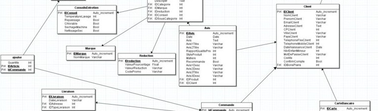

Projet - SQL
Projet d'IUT de modélisation et d’implémentation de base de données en deux étapes : une phase d’analyse terrain et modélisation de base de donnée (MCD) individuelle, suivie d’une mise en œuvre technique avec le SGBD SQLite en binômes.
Le sujet de ce projet est basé sur un cas réel, après l’interview d’un ami ayant travaillé avec la DGSI sur le déploiement d'équipement. L’objectif était de modéliser la gestion de la répartition de téléphones portables sécurisés au sein de cette administration. Ces équipements, couplés à des puces et des applications de sécurité, nécessitent un suivi rigoureux tant sur le plan logistique que fonctionnel.
À partir des informations recueillies, j’ai conçu un Modèle Conceptuel de Données (MCD) structurant les relations entre agents, équipements, applications et historiques d’attribution. J’ai ensuite traduit ce modèle en schéma relationnel, implémenté une base dans SQLite, défini les règles de gestion (contrôle de formats, contraintes de cohérence…), et inséré des jeux de données représentatifs. Enfin, j’ai rédigé une série de requêtes SQL pertinentes pour interroger et exploiter efficacement cette base.